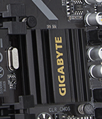

|  | The southbridge is one of the two chips in the core logic chipset on a personal computer (PC) motherboard, the other being the northbridge. The southbridge typically implements the slower capabilities of the motherboard in a northbridge/southbridge chipset computer architecture. In systems with Intel chipsets, the southbridge is named I/O Controller Hub (ICH), while AMD has named its southbridge Fusion Controller Hub (FCH) since the introduction of its Fusion AMD Accelerated Processing Unit (APU) while moving the functions of the Northbridge onto the CPU die, hence making it similar in function to the Platform hub controller. |
The southbridge can usually be distinguished from the northbridge by not being directly connected to the CPU. Rather, the northbridge ties the southbridge to the CPU. Through the use of controller integrated channel circuitry, the northbridge can directly link signals from the I/O units to the CPU for data control and access. |
|